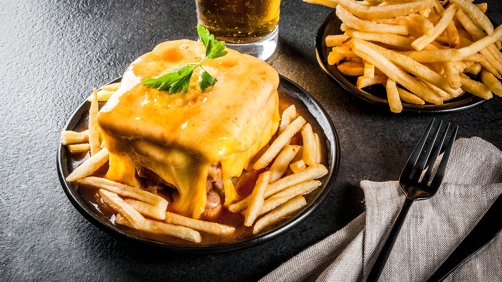

Francesinha

Description
Like a Portuguese version of a Croque Monsieur,
only with far more meat and a tomatoey,
beery sauce which you can spice up with some chilli, if preferred.
Belly busting and described as a 'heart attack on a plate',
this is a food that is local to Porto and made in a few different ways.
I had it at the St Johns Festival and it was amazing and is a local speciality in Porto.
Ingridients
Sandwich Filling
- 2 Fresh Sausages
- 2 Fresh Smoked Sausages
- 2 Thin Steaks
- 4 Slices of bread
- 10 Slices of preferred melty cheese
- 4 Slices Ham or Preferred
- 2 Eggs
Sauce
- 2 Chopped Onions
- 4 Crushed cloves garlic
- 2 oz Butter
- 2 Tbsps OO
- 2 Bay Leaves
- Bacon
- 500 ml Tomato Passata
- 1 Fresh Chili
- 1x 330ml Bottles beer
- 175ml White Wine
Steps
- Sandwich filling: Cut the sausages lengthwise and season with salt and pepper.
Season the steaks as well.
Grill the sausages first and then the steaks so they stay medium rare.
- Meanwhile, make the sauce:
Chop the onions and the garlic and let them sizzle on the pan with some butter,
olive oil, the bay leaves, and bacon.
Add the tomato passata and the chillies and bring to a fast simmer.
Add the booze if you're using any and the stock, and simmer for 10-20 minutes.
Mix the milk and flour with a fork and add it to the sauce to thicken it.
Remove the bay leaves and blend with a stick blender until the sauce is smooth.
- Start shaping the francesinha:
first a slice of bread, then one slice of cheese, one of ham/salami,
the steak, the sausages;
layering between the two sandwiches until the meat is used up between them and you have a sandwich.
Cover all of the sandwiches with the remaining sliced cheese and bung in the oven or grill until it melts.
- Once the cheese is melted,
fry the eggs and top the sandwiches with them and pour the hot sauce over and around.
Serve with fries.